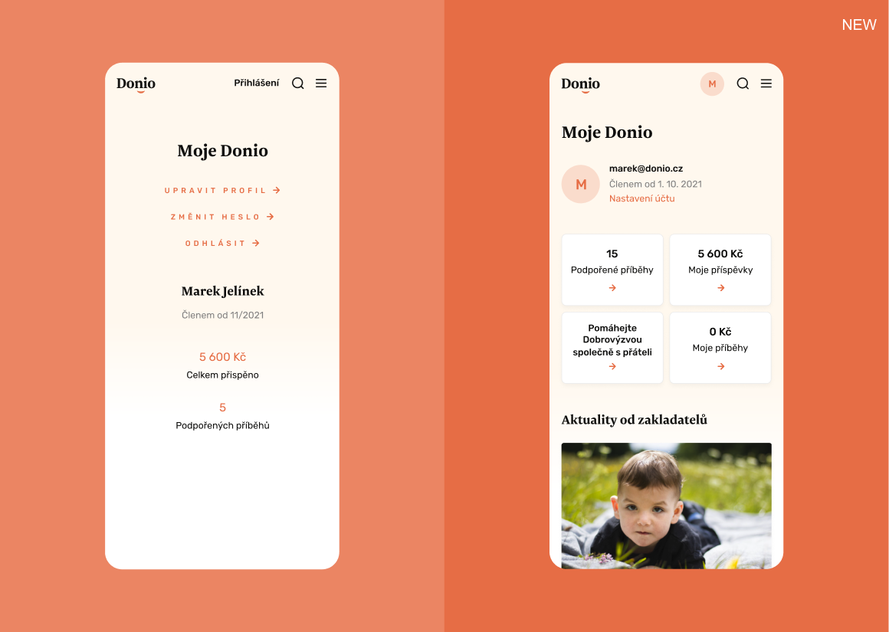
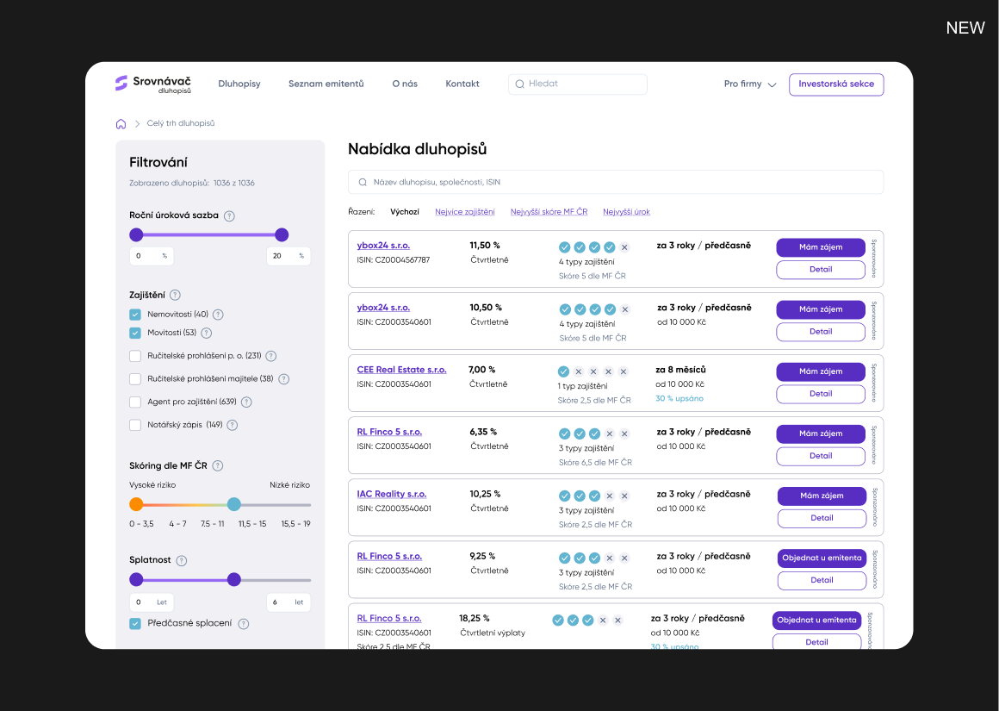
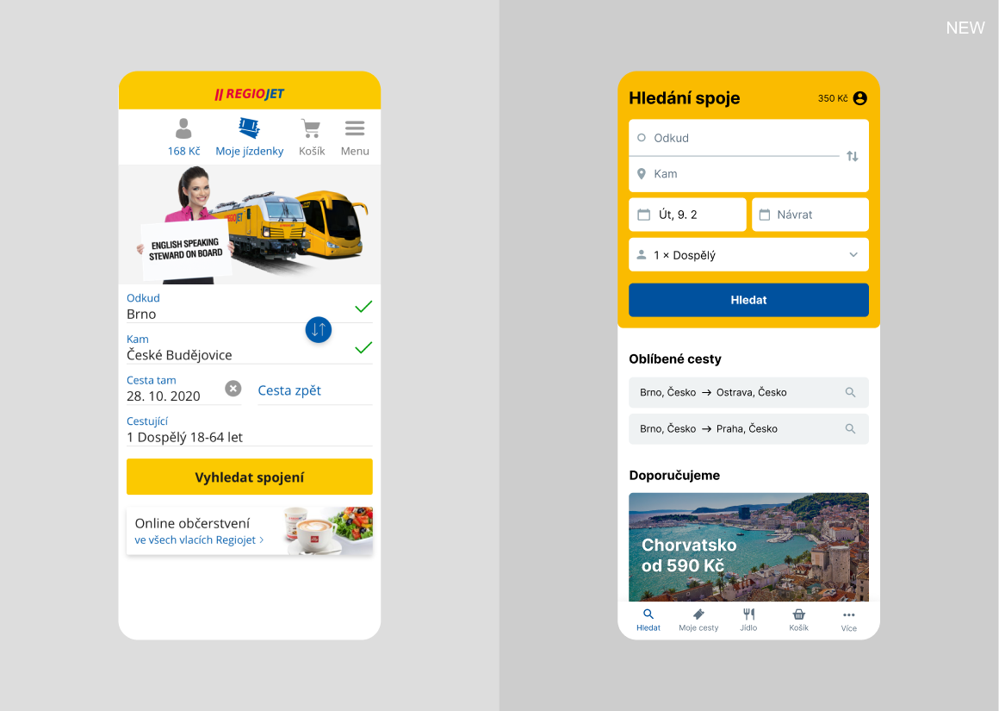

Product Designer
Pro komplexní weby a aplikace

Vybrané projekty
Donio: Víc dárců s účtem
Jako Product Designer jsem s CEO a Tech Leadem rozvíjel významnou českou dárcovskou platformu. Cílem bylo zvýšit počet opakovaných darů. První experimenty nefungovaly, a tak jsme změnili strategii. Z dat jsme zjistili, že většina dárců nemá účet, a nemůžeme je znovu oslovit. Navrhl jsem nové flow a profil dárce, který motivuje k založení účtu a umožňuje personalizovanou retenci. Výsledek je o 200 % více registrací.

Upravil jsme profil dárce, aby měl přehled o svých aktivitách a viděl jak se daří sbírkám, kterým pomohl.
Srovnávač dluhopisů: Více odeslaných poptávek
V rámci agentury DesignDev jsem jako externí Product Designer pracoval na tržišti s více než 1 000 českými dluhopisy. Testování použitelnosti potvrdilo úvodní hypotézu, že se investoři ve velké nabídce ztrácejí. Vytvořil jsem mapu zákaznické cesty a nejvíce problematická místa jsme postupně vylepšovali. Počet odeslaných ptávek vzrost o polovinu.

Upravil jsem filtrování, které umožňuje investorům zmenšit nabídku a najít relevantní dluhopis.
RegioJet: Rychlejší nákup jízdenky
Jako UX designer jsem vedl dvě juniorní designérky při redesignu webové i mobilní aplikace, kterou používá přes půl milionu lidí. Původní vyhledávání spoje a výběr tarifu nebylo intuitivní a uživatel musel zbytečně klikat a přemýšlet. S vývojem jsem průběžně ověřoval technické možnosti a společně jsme zjednodušili klíčové kroky a jednotlivé prvky. Nákup je nyní o 13 % rychlejší.

Navrhnul jsem přehlednější úvodní obrazovku a zjednodušil hledání spoje.
Jak vám pomůžu
Snižuji riziko špatných rozhodnutí díky hlubokému pochopení byznysu i zákazníků.
Designer
s byznysovým myšlením
Vystudoval jsem grafický design na VUT v Brně. Časem jsem se posunul k UX, výzkumu a strategii. Pracoval jsem v agenturách, nebo přímo v produktových týmech, a vyzkoušel jsem různé postupy. Naučil jsem se zapojovat uživatele do tvorby a díky tomu navrhovat řešení, která reálně zlepšují byznys.
Váš projekt má na víc.
Probereme to?
Napište mi, obratem odpovím
Jsem z Olomouce, ale můžeme se sejít:
Praha, Brno, Ostrava
Zjistěte o mně více